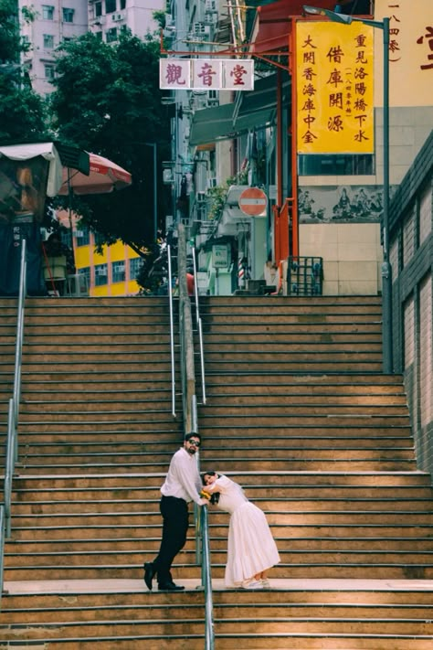

LOCATION INTELLIGENCE REPORT
Hong Kong · Sheung Wan · POHO
FILE · TPS-KYT-001
CONFIDENCE 96 / 100
觀音堂
Tai Ping Shan Kwun Yam Tong — the birthplace of Hong Kong's 借庫 tradition.

REFERENCE · INPUT
625F79740DBCB8D2
- Name
- 太平山街 觀音堂Tai Ping Shan Kwun Yam Tong
- Address
- 香港島 上環 太平山街 34號34 Tai Ping Shan St, Sheung Wan, HK
- Coord
- 22.2841°N, 114.1499°E
- Pin
- maps.google.com/?q=22.2841,114.1499
- MTR
- Sheung Wan A2 → 도보 10분가파른 오르막, 신부 신발 주의
- Built
- 1840[1]道光 20年 · 홍콩섬 최초 觀音廟
VERDICT
GO-WORTHY
LOCATION CONFIDENCE
96 / 100
글씨 단서 (觀音堂·借庫 대련), 비주얼 시그니처 (계단·외벽·간판), 역사 맥락 모두 일치. 채빈이 답사 가지 않고도 80% 결정 가능.
RECOMMENDED
07:30–09:00
01
위치 추정 근거
Identification · Visual + textual evidence
6 distinct clues
cross-validated
홍콩에서 가장 오래된 관음 사원[1]이자, 「觀音借庫」 의식의 발상지[2]. 사진 속 계단은 觀音堂 정면을 향해 오르는 太平山街 중단부의 가파른 계단 구간으로, 觀音堂(34號)이 계단 위쪽 좌측 코너에 자리잡고 있고, 노란 借庫 대련(對聯)이 그 옆 점포 정면에 걸려 있음.
EVIDENCE LEDGER
01
「觀音堂」 간판
흰 바탕 검은 글씨, 가로형. 太平山街 觀音堂 특유의 폰트와 일치. 紅磡 觀音廟와 명확히 다른 디자인.
02
노란 借庫 對聯
「重見洛陽橋下水」「借庫開源」「大開香海庫中金」 — 借庫 의식 발상지인 본 사원에서만 보이는 고유 조합
[2].
03
계단 구조
폭 좁고 가파른 돌계단 + 중앙 금속 난간. POHO 지구 특유의 ladder street 시그니처
[3].
04
건축 디테일
우측 적색 패턴 외벽, 노란 단층 점포는 上環 太平山街 정확한 위치 확정 근거. Google Street View 일치.
05
식생·기후
좌측 아열대 활엽수, 습한 외벽 — 홍콩 5–9월 우기 직전 시즌 가능성. 조명 부드러움도 일치.
06
도시 시그니처
우측 No Entry 표지판 폰트 + 우측통행 도로 마킹 = 홍콩 (대만·일본·중국 본토 패턴과 구분됨).
02
촬영 조건
Shooting conditions · Cost · Permits · Light · Crowd
free entry
tripod cautioned
| ITEM |
STATUS |
NOTE |
| 입장료 |
FREE |
사원·계단 모두 무료. 별도 예약 불필요. |
| 촬영 허가 |
CAUTION |
공공 도로는 별도 허가 X. 삼각대 사용 시 상업촬영으로 간주되어 보안요원·경찰 단속 가능[4]. 권장: 핸드헬드 또는 모노포드. |
| 사원 운영시간 |
UNVERIFIED |
일반 도교 사원 통례 07:00–18:00 (추정). 본 리포트에서 미확정 — 현지 또는 LCSD 확인 필요. |
| 반입 제약 |
OPEN |
공공 계단 = 반사판·소품 OK. 단 보행 방해 시 즉시 단속. 사원 내부는 향·연기 많아 렌즈 보호 권장. |
| 드론 |
BANNED |
上環 = 주거밀집 + 사원 보호 구역. CAD(민항처) 허가 없이 비행 불가[5]. |
| 동행 인원 |
LIMIT |
계단 폭 좁음. 어시 1명 + 신랑신부까지 권장. 5명 이상은 통행 방해. |
LIGHT BY HOUR · 5월 / 위도 22.28°N / 계단 방향 NNW
06:00
일출 전, 사원 그림자
07–09
✦ 부드러운 측광 · 최적
10–11
좌측 그늘, 우측 강한 햇빛
12–14
⚠ 직사광 · 회피
15–17
우측 건물 그림자 길어짐
17–19
✦ 골든아워 · 최적
19+
간판 조명, 야경 가능
CROWD BY DAY · Google popular times 추정
⚠ 2026.03.13–14 觀音借庫 본행사 절대 회피. 사원 야간 개방 + 수만 명 신도 운집
[6]. 촬영 자체 불가 수준.
03
현재 상태 점검
Current state · Photo vs reality diff
all signatures
still present
01 / TEMPLE
觀音堂 본체
1840년 창건 이후 안정 운영. 90년대 초 太平山街 도로 정비로 정문이 약간 후퇴. 사진 속 구조는 그 이후 모습 그대로.
02 / SIGN
노란 借庫 對聯
觀音堂 측 영구 설치물. 매년 借庫 시즌에 새로 도색되지만 위치·문구·색감 동일. 사진과 일치.
03 / STAIRS
계단·난간
太平山街 자체가 보호 거리 지정. 계단 구조·중앙 난간 모두 보존 대상. 변화 없음.
04 / SHOPS
주변 점포
좌측 빨간 차양·노란 단층 점포는 임대 점포라 1–2년 주기로 업종 변동 가능. 색감 다를 수 있음 — 현지 확인 권장.
04
대체·인접 공간
Alternatives within walking distance
5 spots
under 400m
| № |
LOCATION |
DISTANCE |
01 |
磅巷 (Pound Lane)
觀音堂에서 도보 2분. 觀音堂보다 한적하고 계단이 더 김. 양옆 빌딩 그림자가 계단에 깊은 선을 만듦. 인물 단독 컷에 적합.
|
120 mSE |
02 |
樓梯街 (Ladder Street)
홍콩 가장 유명 계단 · 文武廟 옆
觀音堂보다 폭 넓고 더 화려. 단점: 관광객·다른 작가와 충돌 확률 높음. 평일 오전 추천.
|
350 mE |
03 |
Tank Lane (水池巷)
컬러풀 벽화 골목
계단은 아니지만 좁은 골목 + 컬러 벽화. 觀音堂의 무드와 대비되는 캐주얼/스트릿 컷. 같은 출사에 톤 변화 주기 좋음.
|
200 mNE |
04 |
Tai On Terrace (大安台)
磅巷 위쪽 카페 골목
磅巷을 따라 올라간 정상의 작은 테라스. 카페·갤러리 + 트램 노출. 야외 + 실내 카페 컷 둘 다 가능.
|
300 mSE |
05 |
Po Hing Fong (普慶坊)
POHO 지구 메인 거리
觀音堂 한 블록 아래. 카페·부티크 밀집. 인물의 평지 컷 + 모던 무드. 계단 출사 후 자연스러운 동선.
|
150 mN |
05
해외 출사 모드
Overseas mode · 한국 → 홍콩
no visa
no permit needed
VISA
한국 여권 무비자 90일. 출입국 시 호텔 주소 신고만.
FILMING PERMIT
공공 도로·사원 무허가. LCSD 관할 공원은 사전 신청. POHO 지구는 해당 X[4].
BEST SEASON
11–3월 청명·건조. 5–9월 우기·습도 90%. 카메라 결로 주의.
LOCAL FIXER
POHO는 MTR + 도보 접근. 코디네이터 불필요. 영어 충분.
EQUIPMENT
전압 220V · 영국식 BF 콘센트(어댑터 필수). 4G 로밍 또는 현지 SIM.
WARDROBE
5월 평균 26℃ · 습도 80%. 흰 드레스가 계단 톤과 대비 좋음.
06
주의사항
Photographer's caution
read before
departure
01
觀音堂은 종교 시설. 신도 활동 시간(특히 음력 1·15일, 借庫 시즌)에 사원 정면 촬영은 분쟁 소지. 신도들이 들어오면 즉시 비켜주기.
02
계단은 실제 주민 통행로. POHO 지구는 거주 구역. 계단 점거 + 보행 차단은 주민 민원 즉각. 컷 사이 동선 비워주기.
03
삼각대 = 위험 신호. 홍콩 보안요원·교통경찰은 삼각대 보면 상업촬영 의심
[4]. 핸드헬드 + 모노포드까지만.
04
2026.03.13–14 절대 회피. 觀音借庫 본행사. 신도 수만 명, 야간 운영
[6]. 촬영 자체 불가.
05
가파른 경사 — 신부 신발 주의. 계단 폭이 좁고 표면이 닳아 미끄러움. 굽 있는 슈즈는 환복 후 진입 추천. 본식 드레스라면 보조 어시 1명 필수.
06
드론 금지. 上環 일대는 주거밀집 + 사원 보호. 민항처(CAD) 허가 없이 비행 불가.
07
같은 공간, 다른 시선
Reference gallery · How others have framed this place
10 frames
Pinterest visual match
※ 10 frames from
Pinterest related pins — 채빈 사진(pin
2040762327734446)의 알고리즘 추천 79건 중 시각적 최고 매칭 10건 선별
[7]. 클릭 시 핀터레스트 원본 페이지로. 호버 시 컬러로 전환.
SOURCES
REFERENCES & FURTHER READING
- [1]
- [2]
- [3]
- [4]
- [5]
- [6]
- [7]
갤러리 10장 — Pinterest 채빈 사진(pin
2040762327734446)의 related pins 알고리즘 추천 79건 중 선별 —
원본 핀 페이지pinterest.com
- [8]
- [9]
- [10]
- [11]
- [12]